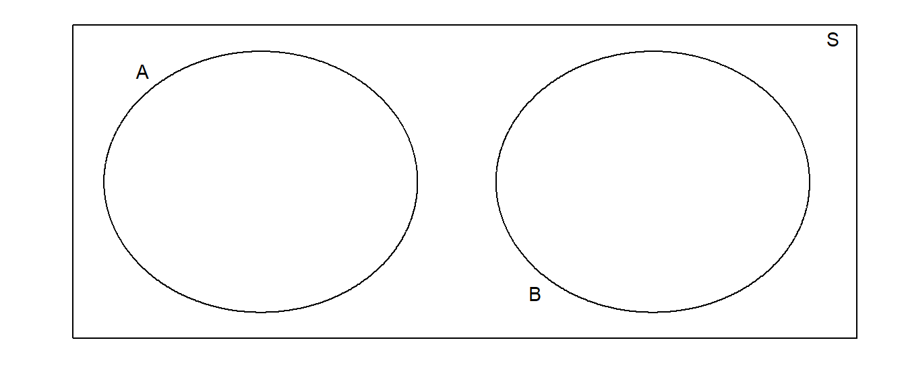

6 Thống kê mô tả cơ bản
Summary statistics (thống kê mô tả tóm tắt) là một phần cơ bản trong khoa học thống kê, giúp chúng ta mô tả ngắn gọn dữ liệu thông qua các chỉ số thống kê cơ bản nhất. Đồng thời, chúng ta cũng sử dụng các công cụ visualization trong R để đưa data trở thành 1 biểu đồ mang mục đích tóm tắt.
Trong phần này, chúng ta sẽ sử dụng dataset TenMileRace từ package mosaicData.
## state time net age sex
## VA :3689 Min. : 2816 Min. : 2814 Min. :10.00 F:4325
## MD :2166 1st Qu.: 5125 1st Qu.: 4950 1st Qu.:28.00 M:4311
## DC :1642 Median : 5806 Median : 5555 Median :35.00
## PA : 273 Mean : 5813 Mean : 5599 Mean :36.86
## NY : 211 3rd Qu.: 6455 3rd Qu.: 6169 3rd Qu.:44.00
## NJ : 92 Max. :10603 Max. :10536 Max. :87.00
## (Other): 563## state time net age sex
## 1 VA 6060 5978 12 M
## 2 MD 4515 4457 13 M
## 3 VA 5026 4928 13 M
## 4 MD 4229 4229 14 M
## 5 MD 5293 5076 14 M
## 6 VA 6234 5968 14 MDataset này có các cột sau:
state: Là nơi sống của người chạy.time: Thời gian chính thức từ lúc bắt đầu chạy đến lúc chạm vạch đích (tính bằng giây).net: Thời gian ghi được (theo giây) từ lúc người chạy vượt qua vạch bắt đầu cho đến lúc chạm vạch đích. Giá trị này thường nhỏ hơn giá trịtimedo có một số lượng lớn người tham gia chạy, và không thể sắp xếp cho người tham gia đứng thẳng hàng để xuất phát cùng 1 lúc được (need citation here).age: Tuổi của người tham gia chạy tính bằng năm.sex: Giới tính người tham gia chạy, thuộc dạngfactorvới 2 giá trịF(female) vàdưM(male).
Trước tiên, chúng ta cần phân biệt giữa 2 loại dữ liệu:
Discrete/Categorical (dữ liệu rời rạc): Là kiểu dữ liệu có giá trị nằm trong 1 tập hợp giới hạn có thể đếm được. Nếu dữ liệu là kiểu numeric, ta có thể gọi là Discrete, còn nếu là kiểu factor/string, ta gọi là Categorical. Ví dụ: Xếp hạng điểm của học sinh theo kiểu chữ cái (A/B/C/D/E/F) hoặc giới tính (Nam hoặc Nữ), hoặc số bữa ăn trong ngày (1 đến 3 bữa, thậm chí nhiều hơn, nhưng quan trọng là chúng ta có thể đếm được).
Continuous (dữ liệu liên tục): Là kiểu dữ liệu số có thể nhận một số giá trị vô hạn, không thể đếm được. Ví dụ: Chiều cao, cân nặng, thời gian/tuổi (ví dụ: Có thể nói là 10 tuổi, nhưng cũng có thể nói là 10 tuổi 5 tháng 20 ngày 7 phút 5 giây, vân vân).
Tóm lại, khi làm việc với dữ liệu, chúng ta có thể tự đặt câu hỏi: “Liệu có thể chia các giá trị trong dataset này thành các phần nhỏ hơn hay không?”. Nếu có, dữ liệu sẽ thuộc kiểu liên tục.
6.1 Tóm tắt dữ liệu qua đồ thị
6.1.1 Một biến rời rạc (univariate)
Chúng ta có thể dùng bar chart để mô tả phân phối của một biến rời rạc (đơn biến - univariate). Các cột (bar) được vẽ thể hiện một giá trị (level) của nhóm factor, và chiều cao của cột (nếu để biểu đồ dọc) thể hiện số quan sát (observation).
Ta cũng có thể dùng group_by và summarise để diễn giải bar chart như ở dưới:
## `summarise()` ungrouping output (override with `.groups` argument)## # A tibble: 2 x 2
## sex count
## <fct> <int>
## 1 F 4325
## 2 M 4311
Có thể thấy 2 cột có chiều cao tương đương nhau do số observation của mỗi giá trị factor gần bằng nhau (4325 vs. 4311). Như vậy, dữ liệu về người chạy đua trong data rất cân bằng về giới tính.
6.1.2 Một biến liên tục (univariate)
Đồ thị histogram nhìn khá giống với đồ thị bar chart, nhưng vì được sử dụng với biến liên tục nên các cột sẽ chạm vào nhau.

Chiều cao của mỗi cột trong đồ thị histogram thể hiện tần suất kết quả chạy theo các khoảng (interval), và trong R gọi là các bin (ngăn). Mặc định của hàm geom_histogram là bins=30, tức là mỗi khoảng cách nhau 30 đơn vị.
Ta có thể diễn giải lại biểu đồ trên dưới dạng bảng:
## `summarise()` ungrouping output (override with `.groups` argument)## # A tibble: 29 x 2
## bins count
## <fct> <int>
## 1 (2.81e+03,3.07e+03] 18
## 2 (3.07e+03,3.33e+03] 22
## 3 (3.33e+03,3.59e+03] 65
## 4 (3.59e+03,3.84e+03] 131
## 5 (3.84e+03,4.1e+03] 197
## 6 (4.1e+03,4.36e+03] 339
## 7 (4.36e+03,4.62e+03] 495
## 8 (4.62e+03,4.87e+03] 685
## 9 (4.87e+03,5.13e+03] 735
## 10 (5.13e+03,5.39e+03] 1004
## # … with 19 more rowscác interval trong bảng và đồ thị trên đều có mặc định là \((x, y]\), tức là \(x < values <= y\) (right-closed, left-opened).
Chú ý: Đồ thị histogram dựa vào diện tích của các cột, không phải chiều cao, tức là bằng \(bin\;width\;*\;count\).
6.1.3 Một biến rời rạc và một biến liên tục (bivariate)
Chúng ta thường phải so sánh mức độ phản hồi (dữ liệu liên tục) của hai biến rời rạc hoặc nhiều hơn. Biểu đồ boxplot thường để sử dụng để làm việc này. Mỗi observation gắn với một giá trị liên tục và 1 giá trị rời rạc

Tron biểu đồ trên, phần rìa (hinge) của hộp được định nghĩa là các khoảng phần tư thứ nhất và thứ 3 (1st quartile, tương đương với 25% quantile, và 3rd quartile, đương tương với 75% quantile). Nói cách khác, 25% dữ liệu nằm dưới hộp, 50% nằm trong hộp, và phần 25% cuối cùng nằm phía trên hộp. Các điểm bên ngoài hộp là các outliers (điểm ngoại lai). Nếu định nghĩa Inter-Quartile Range (IQR) là chiều dài của hộp thì tất các quan sát lớn hơn 1.5*IQR tính từ hộp được coi như là 1 outlier.
Ngoài cách trên, chúng ta có thể dùng 2 đồ thị histogram đặt cạnh nhau để so sánh:
Trong trường hợp này, đồ thị đặt theo chiều dọc sẽ dễ so sánh hơn:

6.1.4 Hai biến liên tục (bivariate)
Để biểu diễn mối quan hệ của 2 biến liên tục, ta dùng biểu đô dạng điểm:
6.2 Xu hướng trung tâm
Ngoài việc sử dụng các loại biểu đồ và đồ thị, chúng ta còn có thể dùng các 1 số chỉ số cơ bản để miêu tả dữ liệu. Mở đầu là các chỉ số về chiều hướng trung tâm (centrality).
6.2.1 Mean (Trung bình cộng)
Giá trị trung bình cộng (arithmetic mean, hay còn được gọi là average) là chỉ số cơ bản nhất, được tính theo công thức:
\[\bar{x}=\frac{1}{n}\sum_{i=1}^{n}x_{i}=\frac{1}{n}\left(x_{1}+x_{2}+\dots+x_{n}\right)\]
Trong R, ta tính mean bằng cách dùng hàm mean():
## [1] 5599.065## mean(net)
## 1 5599.0656.2.2 Median (Trung vị)
Median (trung vị) là giá trị ở giữa của 1 tập hợp dữ liệu đã sắp xếp theo thứ tự. Trong trường hợp số phần tự của tập hợp là số chẵn, ta lấy trung bình cộng của 2 giá trị ở giữa làm median, tức là lấy \((1/2)(y_{n/2}\;+\;y_{(n/2+1)})\).
Trong R, ta tính median bằng hàm median():
## [1] 5555## median(net)
## 1 55556.2.3 Trimmed mean
Giá trị “trimmed mean” là giá trị trung bình sau khi “xén” bớt một số phần trăm nhất định ở 2 đầu phân phối; ví dụ đối với 5% trimmed mean, sau khi sắp xếp dữ liệu theo thứ tự, ta lấy bớt 5% các quan sát đầu tiên và cuối cùng, giữ lại 90% rồi lấy trung bình cộng.
Trong R, ta tính trimmed mean bằng hàm mean() kèm theo thông số trim = n:
## [1] 5555Có thể thấy, sau khi xén bớt 5% quan sát ở 2 đầu phân phối, mean và median của trường net trong dataset TenMileRace bằng nhau.
6.2.4 Ví dụ
Một lớp học có 9 người, tuổi của cả lớp là tập hợp \(\{21, 22, 23, 25,26,22, 23,21, 26\}\). Mean của tập hợp là 23.222, median là 23; hai giá trị này hiện đang xấp xỉ nhau. Người thứ 10 nhập học có tuổi là 71, khiến mean của tập hợp trở thành 28.6, median vẫn giữ nguyên là 24. Giá trị mean mới lớn hơn so với median, do chúng ta thêm vào 1 outlier lớn hơn hẳn. Dữ liệu lúc này được gọi là lệch sang bên phải (skewed).
Đối với dữ liệu có độ lệch lớn, giá trị median sẽ thể hiện xu hướng trung tâm tốt hơn mean.
## [1] 23.22222## [1] 23## [1] 28## [1] 236.3 Mức độ phân tán (Spread/Dispersion)
Câu hỏi thứ 2 khi làm việc với 1 dataset là “Mức độ phân tán của dataset này như thế nào?”. Ví dụ, ta có 2 tập dữ liệu có các tham số trung tâm tương đương nhau, nhưng không có nghĩa là 2 tập này giống nhau, mà dữ liệu có thể phân tán và biến thiên khác nhau. Có nhiều cách để trả lời câu hỏi này:
6.3.1 Range (Khoảng biến thiên)
Range (khoảng biến thiên) là khoảng cách giữa giá trị quan sát nhỏ nhất đến giá trị quan sát lớn nhất.
\[Range=Max-Min\]
## range
## 1 77226.3.2 Inter-Quartile Range
Interquartile range là khoảng cách giữa tứ phân vị thứ 3 (3rd quartile) và thứ phân vị thứ nhất (1st quartile):
\[IQR=Q3-Q1\]
Trước tiên, cần giải thích định nghĩa của các thuật ngữ -tile:
Percentile: Tiếng Việt nghĩa là “bách phân vị”; sau khi xếp dữ liệu theo thứ tự, giá trị phần trăm thứ \(p\) (\(p_{th}\) percentile) là giá trị quan sát có \(p\) phần trăm số quan sát bên dưới và \((1-p)\) bên trên, trong đó \(p\) nằm giữa 0 và 100. Percentile thứ 0 và 100 là chính là giá trị nhỏ nhất và lớn nhất của tập dữ liệu. Giá trị median là giá trị phần trăm thứ 50 (50th percentile). Percentile là một mốc, không phải 1 khoảng dữ liệu.
Quartile: Thông thường, chúng ta sẽ chia dữ liệu ra làm 4 phần với 3 mốc 25th percentile, 50th percentile và 75th percentile, tức là chia dữ liệu ra làm 4 phần. Ba mốc này cũng được gọi là 1st, 2nd và 3rd quartiles (khoảng phần tư thứ nhất, thứ 2 và thứ 3).
Quantile: Là các điểm cắt/điểm mốc chia một khoảng phân phối xác suất ra thành các khoảng với xác suất giống nhau. Như vậy, quartile và percentile là các trường hợp đặc biệt của quantile.
Dùng hàm quantile():
## 0% 25% 50% 75% 100%
## 2814 4950 5555 6169 10536# so sánh giá trị 0%, 50% và 100%
# với các hàm min, max và median
c(min(TenMileRace$net),
median(TenMileRace$net),
max(TenMileRace$net))## [1] 2814 5555 10536Chúng ta có thể dùng argument probs trong hàm quantile() để tìm ra các percentile khác:
## 5% 95%
## 4098.75 7260.50Giá trị mặc định của argument probs là 0 (min), 0.25 (1st quartile), 0.5 (2nd quartile/median), 0.75 (third quartile) và 1 (max).
Để tính IQR, chúng ta hàm IQR (nhớ viết hoa):
## [1] 1219## IQR(net)
## 1 1219Lưu ý: hàm quantile mặc định trả về 5 giá trị, vì vậy sẽ không kết hợp được với dplyr::summarise do hàm summarise chỉ trả về 1 kết quả. Nếu thay đổi argument probs thì có thể kết hợp được.
## quantile(net, probs = 0.5)
## 1 55556.3.3 Variance (Phương sai)
Trước tiên, ta xem xét khoảng cách từ một quan sát bất kì đến mean (deviation). Ta định nghĩa deviation thứ \(i_{th}\) là:
\[e_{i}=x_{i}-\bar{x}\]
Vậy khoảng cách trung bình đến mean là bao nhiêu? Nếu khảo sát mức độ phân tán bằng cách này, ta gặp phải 2 vấn đề:
- Tổng của tất cả các khoảng cách từ các quan sát đến mean bằng 0:
\[\sum_{i=1}^{n}(x_{i}-\bar{x}) = \sum_{i=1}^{n}x_{i}-\sum_{i=1}^{n}\bar{x} = n\frac{1}{n}\sum_{i=1}^{n}x_{i}-n\bar{x} = n\bar{x}-n\bar{x} = 0\]
- Vấn đề lớn hơn: Các giá trị khoảng cách đến mean có cả giá trị âm và dương, và khi khảo sát mức độ phân tán, kết quả âm hay dương là vô nghĩa. Để giải quyết vấn đề này, chúng ta có thể lấy giá trị tuyệt đối hoặc bình phương kết quả.
Nếu đi theo hướng lấy giá trị tuyệt đối, ta dùng chỉ số MAD (Mean Absolute Deviation), được tính là trung bình của tổng giá trị tuyệt đối của khoảng cách từ các observation đến mean: \((1/n)\sum_{i=1}^{n}|x_{i}-\bar{x}|\).
Nếu đi theo hướng bình phương kết quả, ta dùng phương sai (variance). Trong thực tế, dữ liệu thường ở dạng một phân phối chuẩn (normal distribution - sẽ nhắc đến ở phần 2), như chiều cao con người, huyết áp, điểm thi, giá cổ phiếu, v.v. Phân phối chuẩn được định nghĩa bởi 2 thông số là mean và variance, và vì mức độ quan trọng của phân phối chuẩn, nên variance được sử dụng nhiều hơn khi tính toán mức độ phân tán.
Sample variance (Phương sai mẫu), với \(\bar{x}\) là giá trị trung bình cộng của mẫu, \(n\) là số observation: \[s^2=\frac{1}{n-1}\sum_{i=1}^{n}(x_{i}-\bar{x})^2\]
Population variance (Phương sai quần thể), với \(\mu\) là giá trị trung bình cộng của quần thể, \(n\) là số observation: \[\sigma^{2}=\frac{1}{n}\sum_{i=1}^{n}(x_{i}-\mu)^2\]
Dữ liệu thu thập được thường ở dạng một mẫu của cả quần thể. Nếu trong trường hợp có dữ liệu của cả population, ta sẽ dùng công thức 2. Ở cả 2 công thức, ta lấy tổng bình phương của khoảng cách tới mean, sau đó lấy trung bình, tuy nhiên ta chia cho \((n-1)\) để tính sample variance (phương sai mẫu) thay vì chia cho \(n\) để tính population variance (phương sai quần thể). Ta làm điều này để tránh việc (\(\sigma^{2}\)) bị “biased” - có nghĩa là nếu dùng công thức tính population variance cho một sample, kết quả tính ra thường nhỏ hơn bình thường (do ta đang tính \(s^2\), vốn là 1 chỉ số ước lượng (estimator), dựa trên 1 chỉ số ước lượng khác là \(\bar{x}\)).
Để tính sample variance trong R, chúng ta sử dụng hàm var():
## [1] 940233.56.3.4 Standard variation (độ lệch chuẩn)
Vấn đề lớn nhất của sample variance là đơn vị ở dạng bình phương, dẫn đến việc gây khó hiểu, khó để dẫn đến kết luận/phân tích. Để giải quyết, ta lấy giá trị căn bậc 2 để có được độ lệch chuẩn mẫu (sample standard deviation).
\[s=\sqrt{s^2}\]
Để tính độ lệch chuẩn mẫu trong R, ta dùng hàm sd():
## [1] 969.6564Về mặt toán học, phương sai quan trọng hơn vì nó được sử dụng làm định nghĩa cho các phân phối xác suất, nhưng độ lệch chuẩn dễ hiểu hơn và vì thế có ích trong thực tế hơn.
6.3.5 Hệ số biến thiên (Coefficient of variation)
Chúng ta xem xét ví dụ sau: Có 1 nhóm động vật có độ lệch chuẩn mẫu của chiều dài con vật là 15cm. Chỉ với thông tin này, ta gần như không thể đưa ra kết luận gì có ích. Giả sử có thêm thông tin về loài động vật:
Nếu là voi: ta có thể kết luận nhóm các con voi này có chiều dài rất đồng đều, do chiều dài trung bình của cả loài voi nói chung sẽ lớn hơn 15cm rất nhiều, và ta có thể dựa vào common sense để nhận định rằng chiều dài giữa các con voi trong nhóm lệch nhau rất nhỏ.
Nếu là côn trùng: ta có thể kết luận nhóm côn trùng này có chiều dài rất đa dạng, thậm chí là có nhiều loài côn trùng khác nhau. Trong thực tế, loài côn trùng dài nhất cũng có chỉ độ dài khoảng 60cm.
Như vậy, nếu có thêm thông tin về loài động vật, hay nói cách khác là thông tin giúp ta ước lượng được chiều dài trung bình của nhóm động vật trên, ta sẽ đưa ra được nhiều kết luận có ích.
Để giải quyết vấn đề này, ta có thể dùng hệ số biến thiên:
\[CV = \frac{s}{|\bar{x}|}\]
6.3.6 Quy tắc thực nghiệm
Ta có thể sử dụng quy tắc thực nghiệm như sau để áp dụng cho các mẫu dữ liệu tương đối lớn và đối xứng:
| Khoảng | Số lượng phần trăm quan sát (tương đối) |
|---|---|
| \(\bar{x}\pm s\) | 68.3% |
| \(\bar{x}\pm 2s\) | 95.5% |
| \(\bar{x}\pm 3s\) | 99.7% |